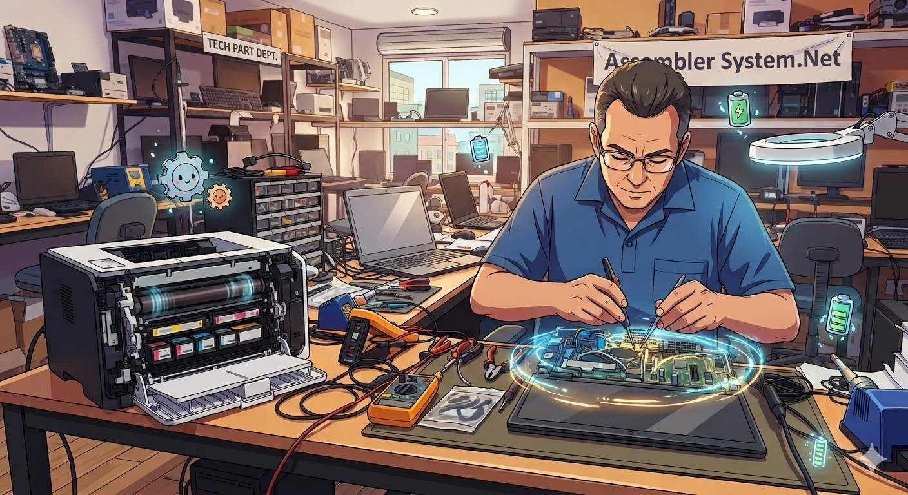
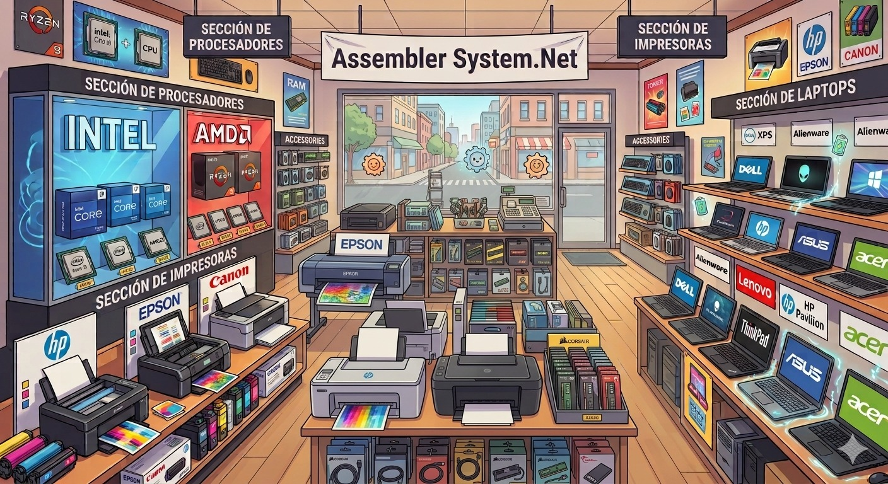

Assembler System.Net

Reparación de Equipos de Computo.
Reparación de Equipos de Computo, Laptops e Impresoras.

Venta de Equipo de Computo.
Venta de Equipo de Computo como Pcs de Escritorio, Laptops e Impresoras.
Desarrollo de Software.
Desarrollo de Software a la medida de su Empresa.
Reparación de Consolas y Controles de Video Juegos.
Reparación, Mantenimiento, Corrección de Drifts y cambios de Botones y Gomas.
Visitas: 0